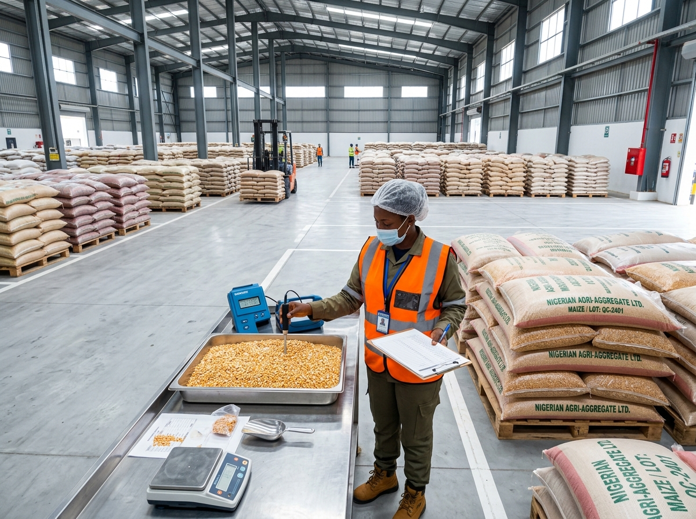

WELCOME TO BFARMCON!! Feeding Tomorrow including Everyone |
Operating under our comprehensive Farmers Connect (SOP v2.0) framework. We bridge smallholder farming clusters with industrial food processors, off-takers, and trade financiers across Kaduna, Taraba, Benue, and Niger with guaranteed quality standards.

Regional Operational Hubs
Kaduna, Taraba, Benue, NigerPurity Threshold Guarantee
< 2% foreign matter standardTarget Moisture Retention
Calibrated 12% to 14% limitsEscrow & Traceability
Tripartite trade settlement
About BFARMCON & Farmers Connect
BFARMCON LIMITED is an agro-allied leader committed to the standard: "Feeding Tomorrow including Everyone." Through our flagship operational manual Farmers Connect (v2.0), we systematize interactions between smallholder farmer cooperatives, agro-processors, institutional off-takers, and trade finance partners.
From our Head Office in Kudenda, Kaduna, to active aggregation centers in Taraba, Benue, and Niger, we enforce rigorous pre-shipment inspections, farm-gate pricing transparency, and climate-smart agricultural frameworks.
Standard Operating Procedures
Three verifiable verticals governing consultancy, buying agency services, and commodity aggregation.
SOP 1.1 • ESG Advisory
Client Intake & Baseline Audit
Conduct comprehensive ESG audit covering carbon footprint, waste management, fair labor standards, and community engagement.
Strategy Formulation
Draft tailored ESG Roadmap with targets, timelines, KPIs, and customized training modules for farm operators and off-takers.
Field Monitoring & Impact Reporting
Bi-weekly field visits tracking sustainable land use, farm-level logging, and quarterly verified ESG performance reports.
SOP 1.2 • 1.3 Intel & Food Safety
Market Price Intelligence & Feasibility Desk
Daily/weekly spot price tracking across rural/assembly markets, weekly corporate Agro Bulletins, and 48–72h tailored feasibility reports.
Food Safety & Standards Advisory
Gap analysis, Corrective Action Plans (CAP), batch tagging for traceability, and Pre-Shipment Inspection (PSI) for MRLs & moisture.
SOP 2.1 • Local Buying Agent (LBA)
Order Setup & Farmer Engagement
Purchase Order receipt, stock verification across farmer clusters, and transparent farm-gate price negotiations.
Quality Testing & Weighing
Batch quality inspection (calibrated moisture meter, visual check, weighbridge). Substandard lots rejected at source.
In-Transit Logistics, Delivery & Payout
Sealed transit to factory, destination verification, invoice issuance, and rapid cooperative payout disbursement.
SOP 2.2 • Trade Finance Linkage
Farmer KYC & Deal Structuring
Assess land size, yield history, off-take contracts, credit standing, and execute binding tripartite agreements.
Credit Packaging & Escrow Disbursement
Package financials with ESG ratings. Capital disbursed directly into controlled escrow or input accounts—never cash.
Automated Loan Recovery
Automatic deduction of principal and interest at off-take settlement before disbursing net profits to farmer groups.
SOP 3.1 • Off-taker Contracting
Requirement Mapping
Onboard industrial processors to document seasonal volume demands, quality parameters, and delivery timelines.
Forward Off-take Contracts
Match processor demand with verified farmer clusters. Execute contracts with fixed-rate or spot-indexed pricing formulas.
Crop Cycle Administration
Continuous monitoring of crop growth cycles to guarantee fulfillment within contracted industrial delivery windows.
SOP 3.2 • 4-Stage Aggregation
5-Day Notification & Hub Intake
Cooperative notifies Farmers Connect 5 days before harvest; produce is received and weighed at Kaduna, Taraba, Benue, or Niger hubs.
Grading, Bagging & Warehousing
Precision cleaning, winnowing, sorting, and storage in humidity-controlled facilities prior to factory dispatch.
Core Operational Verticals
Hover over any vertical to discover our Standard Operating Procedures.
ESG Advisory
Environmental, Social & Governance frameworks guiding agribusinesses in carbon baseline audits, waste management, fair labor standards, and quarterly impact reporting.
Market Price Intelligence
Real-time spot pricing gathered daily from major rural and assembly markets. Weekly Agro Market Bulletins, SMS alerts, and tailored feasibility reports within 48-72 hours.
Food Safety & Standards
GAP, HACCP, and ISO 22000 adherence prior to off-taker delivery. Gap analysis, pesticide protocols, batch tagging, and Pre-Shipment Inspections (PSI) for maximum residue limits.
Local Buying Agent (LBA)
Authorized direct procurement on behalf of corporate processors. Purchase order execution, cluster stock verification, digital weighbridge scaling, and sealed transit logistics.
Trade Finance Linkage
Connecting creditworthy farmer cooperatives with banks, fintechs, and impact investors. Tripartite agreements, escrow disbursement, and automated settlement loan recovery.
Commodity Aggregation
Consolidating smallholder harvests into industrial commercial quantities. Forward off-take contract matching, cleaning, winnowing, and moisture-controlled warehousing.

Get In Touch
Connect with our Head Office or direct regional representatives across Kaduna, Taraba, Benue, and Niger.
Kaduna Headquarters
No 15 Assemblies of God Road zokoriko, Kudenda, Kaduna
Regional Operational Hubs
Send Us a Direct Message
Submit an off-take procurement inquiry, farmer cooperative registration, or ESG advisory request.